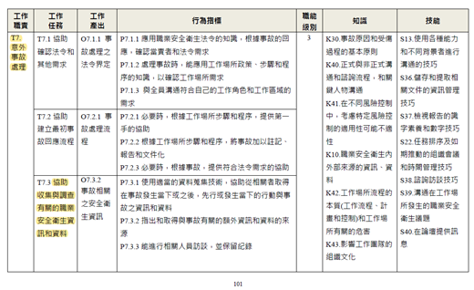
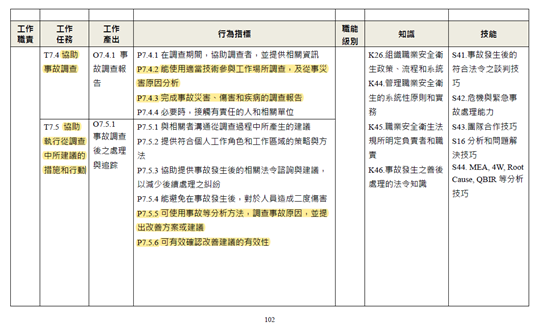

事故調查角色定位
本章探討職業災害事故調查(以下簡稱事故調查)的功能與重要性，結合職業安全衛生管理系統(以下簡稱管理系統)，法律規範、及職業安全衛生專業人員(以下簡稱職安衛人員)職能等，闡明其在創造安全工作環境中的組織、個人與社會層級的專業價值。
(一).事故調查的功能
事故調查對於企業來說，是回應職災發生後處置的必要步驟，也是職業安全衛生管理體系中不可或缺的一環。透過深入分析事故原因，制定有效對應的改善措施，企業可以預防類似事故再次發生，持續改善管理系統，形塑正向安全文化，降低法律與財務風險。為發揮此功效，國內外已建立許多值得參考的事故調查制度的指引與標準，提供了實務且系統化的調查與分析方法(如時序表、因果、屏障、變更、邏輯圖及組織因素等分析工具)[@doe2012; @hse2004; @ilo2015; @usaosha2015a]，幫助與強化現場管理與職安衛人員的核心職能。企業應將事故調查視為改善管理系統的機會，而非僅是應對法規的義務。只有當事故調查結果真正轉化為具體有效的改善行動，並融入企業文化與管理體系中，才能確保職場安全衛生與勞工福祉，促進企業的永續發展。
(二).事故調查的重要性
事故調查的主要目的是找出事故的根本原因，而非僅僅停留在表面問題的解決。其對企業與工作者具有以下積極效益。1.防止未來事故發生：每次事故都提供了學習和改進的機會，透過系統性事故調查，企業能識別出導致事故的深層原因，例如設備故障或管理漏洞，並針對性地採取有效措施。2.識別安全管理缺失漏洞與風險：事故調查通常揭示出企業在安全政策、程序及訓練上的不足。3.促進法律合規：許多國家要求雇主對職災進行調查並向相關機構報告結果，透過詳細的調查，企業可展示其遵守職業安全衛生法規的承諾，同時減少法律風險與責任。4.提升員工參與與投入：事故調查過程使員工參與，不僅能提高他們對安全的認知，與對安全問題的敏感度，並激發他們提出改進建議，促進正向的安全文化，員工感受到企業對其安全健康福祉的重視，有助於建立信任並激勵他們主動參與安全改進[@wachter2014]。5.降低財務損失：職災可能造成生產中斷、設備損壞及法律停工與罰鍰等高昂成本，透過有效的事故調查與預防措施，企業可以減少這些損失，保護財務利益。
(三). 事故調查在管理系統中的應用
勞動部職業安全衛生署(以下稱職安署)為鼓勵並輔導事業單位建立自主性安全衛生管理體制，持續改進安全衛生設施，以發揮自主管理功能，積極推動台灣職業安全衛生管理系統(TOSHMS)。其參考國外管理系統相關標準及驗證規範，於2018年促使將ISO 45001:2018[@iso]轉為我國國家標準CNS 45001及作為TOSHMS驗證之標準，要求事業單位應參照此國家標準管理系統，期使我國可符合世界潮流趨勢，並有效降低工作場所之危害及風險，加速我國職業災害率的降低，以邁向職業安全衛生標竿國家。CNS 45001強調透過系統化的政策、目標設定及活動執行來評估與管理職場風險，而事故調查是安全管理系統中的重要組成部分(CNS 45001條文10.2事故、不符合事項及矯正措施)。透過對事故的深入調查，組織可以識別出潛在的風險因素、管理上的漏洞，以及需要改進的安全措施。有效的安全管理系統與事故率之間存在顯著的負相關。這意味著，完善的安全管理系統能夠有效降低事故發生率[@wachter2014]。
事故調查不僅是事後應對程序，更是管理系統的動態反饋機制，係PDCA循環的驅動力，更是風險管理的周期循環連結。在管理系統績效評估的「檢核（Check）」與「改善行動（Act）」階段，事故調查提供實證數據，修正現有管理模型不足，並推動管理循環的持續改進。事故調查結果還可直接作為「風險與機會評估」，找出隱藏的系統性缺失，補足風險評估的盲點。
(四).我國法規對事故調查的要求
職業安全衛生法規對於企業端的事故調查要求，在職災事故通報上有明確規定，但對於調查程序與報告製作上，則相對欠缺。在定期通報上，達一定條件之企業(如雇用勞工50人以上或被官方指定者)，雇主須按月填報職災統計資料，以供主管機關統計分析制定相關政策，這可以增加透明度，也有助於社會長期改善。企業在事故調查制度撰擬上，大都遵循TOSHMS規範或原則，制定相關調查處理程序，且部分已提供在網路上可供查閱。官方並無出版相關指引工企業參考，以致企業間只能相互參考，內容也較欠缺系統性，並未有如英國HSE、美國OSHA、國際勞工組織ILO等制定官方指引，供企業遵循或職安衛人員之專業教育訓練規劃之用。
淨零碳排的ESG（環境、社會、企業治理）要求與事故調查之間存在著一定程度關聯，事故調查制度除合規外，更是企業永續發展的策略工具之一，事故發生對企業社會形象與財務具有負相關[@caiazza2023]，但詳實的調查報告與有效的風險控制措施，可作為ESG永續報告書的堅實基礎，展現對ESG的承諾，提升社會大眾與客戶信任。更進一步，若針對外包商或協力廠商事故，建立聯合調查機制（如共享原因分析工具），將安全衛生管理循環延伸至供應鏈，降低連帶責任風險。
(五).事故調查係職安衛人員的專業核心職能之一
職能是指「為完成特定職業或職類工作，所應具備之能力組合」，而事故調查職能在職安衛人員培養與發展中具有相當的重要性(張承明, 2010)。在職業安全衛生管理員職能基準研究中指出，職安衛專業人員在協助意外事故調查時，能使用適當技術參與工作場所調查，及從事災害原因分析，及完成事故災害、傷害和疾病的調查報告等職能(謝馥蔓 & 吳幸娟, 2017)。依據該研究表38職業安全衛生管理員職能基準表，摘錄其有關事故調查職能如表 1。
表 1 職安衛人員事故調查職能基準
|  |
|  |
| 資料摘錄自[職業安全衛生從業人員職能基準建置研究，謝馥蔓、吳幸娟，2017-06] 表38職業安全衛生管理員職能基準表 |
現場主管、職安衛人員、及官方檢查員需掌握多項技能以有效執行事故調查，主要包括調查、原因分析、防範對策發展、溝通協調能力、與法律知識等能力[@chang2013; @hse2004a; @ilo2015; @usaosha2015a]。綜合來說，建立系統性事故調查制度，可以達成法律合規與社會責任的雙重功能，其整合安全衛生管理循環，屬TOSHMS的核心樞紐之一，更是安全文
在結合數位科技、人工智慧的(AI)、當代先進科技與跨領域合作(如結合人因工程、心理學、醫學與數據科學專家等跨學科專家協作)等可見前景發展下，借助數位化工具應用(如導入3D掃描重建事故現場、AI自然語言處理分析訪談紀錄，證據收集、分析工具與報告APP化等，都將提升調查客觀性)，將重新定義事故調查的深度與效能。基此，財團法人職業災害預防及重建中心(以下簡稱職災預防重建中心)為提升職安衛人員職能，與降低企業職災發生率與嚴重性，為職災預防工作扎根與鋪路，試行114年製造業職業災害事故調查推廣計畫，特別規範要制定出事故調查指南與實用調查分析工具，並辦理相關研討會，供參與之專業職安衛人員學習與案例實作分析，培養事故調查分析職能，使能更有效發揮職業安全衛生管理系統之綜效。職安衛人員可參考此指南做為契機，不斷提升自身專業能力，為創造更安全的工作環境貢獻力量。
事故調查的角色定位已從「事後究責」轉變為「前瞻治理」的核心支柱。其價值在於串聯法規、技術、文化與數據，形成「預防→應變→學習」的動態循環。對企業而言，投資於嚴謹且系統性的事故調查制度，等同於建構「韌性組織」的基礎；對職安衛人員，則需持續精進跨域整合能力，學習事故調查技能，將事故調查的洞察(insight)轉化為可執行的風險控制策略，實現職場安全衛生的永續經營典範。
學習自我評估
- 事故調查的主要目的為何？
- 事故調查為何是職安衛管理系統(TOSHMS)的重要一環？
- 事故調查過程中的主要步驟有哪些？
- 你習慣使用那些事故分析工具？(請列出3種)
- 職安衛專業人員在事故調查中應具備哪些核心職能？（職能要求）